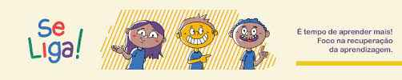

e um programa criado com objetivo de passar os alunos que ainda nao atingiram a meta de 180 pontos trimetrais
fui preguisoso o ano todo,fiz bagunca o ano todo,nao fiz os quizz,nao fiz varios trabalhos.
terei mais responsabilidade e respeito com o professores,tenho que parar de procastinar